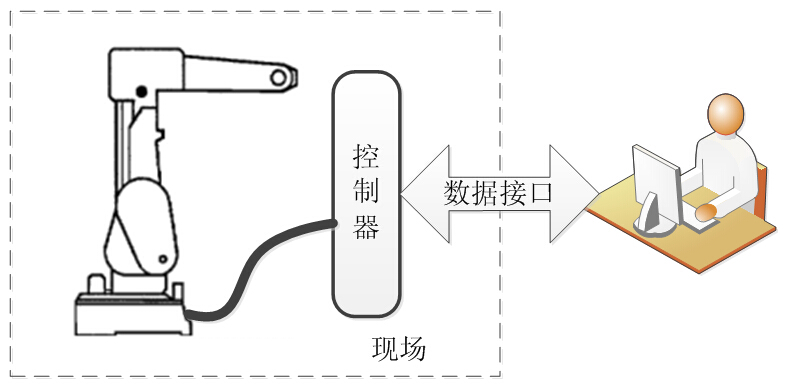

7.1离线编程的定义与发展现状
机器人编程指为了让机器人完成某项作业而进行的程序设计。工业机器人的编程方式主要有示教编程和离线编程，随着工业机器人技术的发展以及应用行业越来越广泛，示教编程已不能有效满足用户的需求，因此迫切需要配套的离线编程软件来满足各行业的需要。由于国内在这方面起步较晚，整体水平比较低，目前离线编程软件主要集中在国外。
7.1.1离线编程的定义
工业机器人编程方式主要分为在线示教编程和离线编程两种，在线示教编程即指通过示教器直接操作机器人运动到指定的姿态和位置，并依次记录这些位置并保存为NC程序文件。而离线编程则不须操作机器人，而是依据三维模型，依次提取轨迹点的信息，并自动生成NC程序文件，通过控制器的数据接口将NC程序导入控制器。机器人离线编程的数据交换如图7-2所示。
图7-2 机器人离线编程示意图
下面我们针对这两种编程方式的特点进行比较：
表7-1 在线示教编程和离线编程特点比较
| 在线示教编程 | 离线编程 | |
|---|---|---|
| 优点 | 1）通过直接操作机器人完成，所见即所得，非常直观； 2）简单易学，对编程人员要求不高。 | 1）无需占用机器人工作时间； 2）能根据工件几何特性自动生成运动轨迹，效率高，程序质量高； 3）编程人员工作环境相对安全。 |
| 缺点 | 1）通常在线示教时间较长，效率低； 2）在线示教需要占用机器人的工作时间； 3）在线示教由人工控制位置和姿态，不能充分考虑工件几何特性。 | 1）需要依靠运动仿真来验证程序； 2）其路径运行结果受到机器人定位精度的影响较大； 3）若要精通离线编程技术，需要掌握CAD相关基础知识。 |
通过表7-1的比较可以看出，离线编程相较于示教编程而言，离线编程生成的代码有效性、编程灵活性、操作简便性方面都具有明显的优势。尤为重要的是离线编程改善编程人员的工作环境，避免了现场操作机器人时可能产生的危险，这在最求效率和人工成本的今天，是必然的发展趋势。